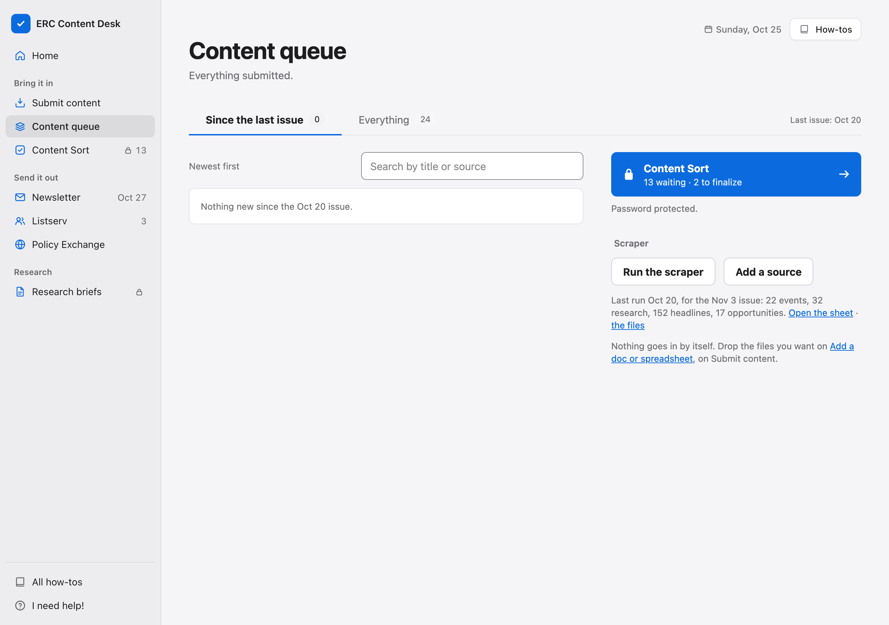
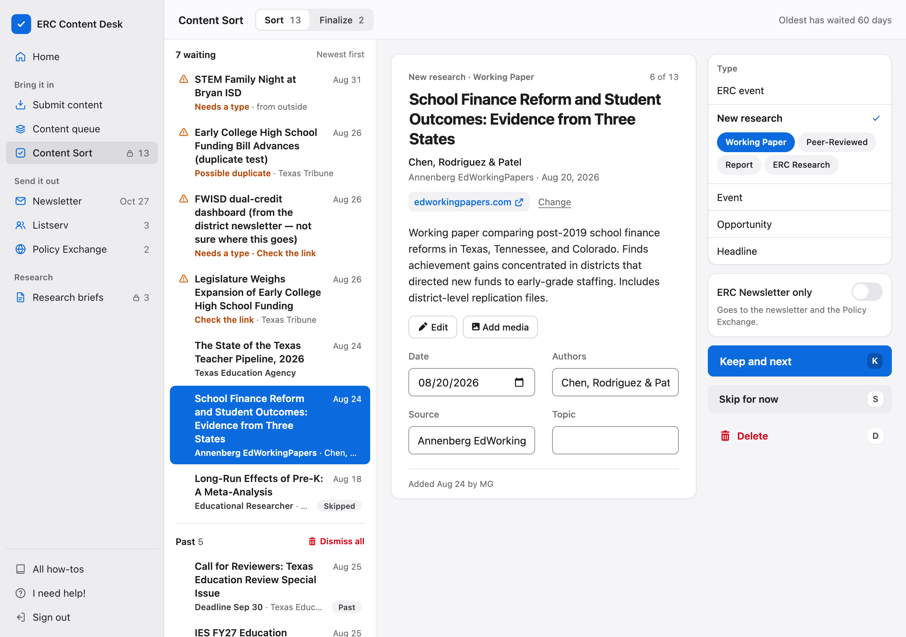
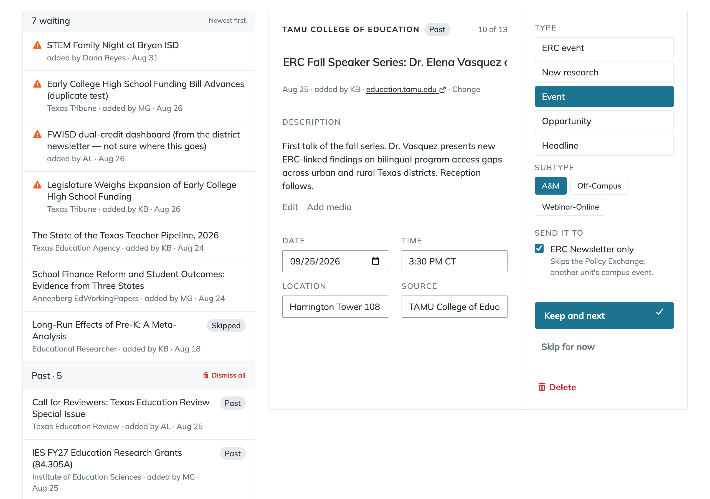
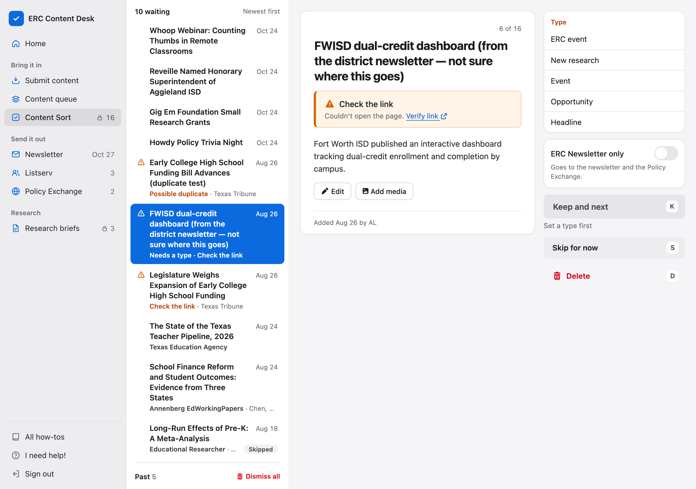
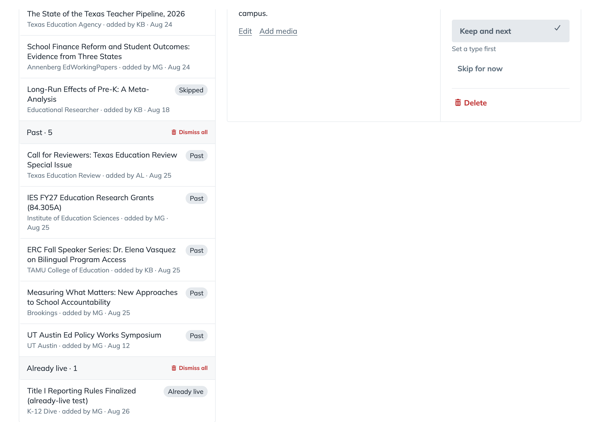
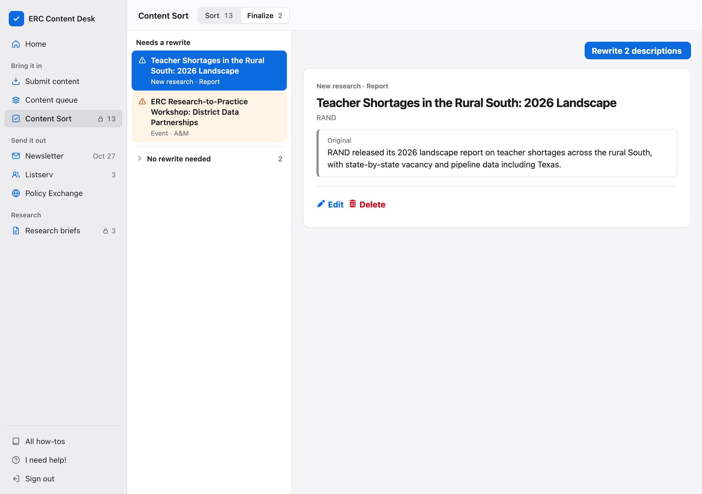

Check each rewrite
- Press Keep, or Use original for the item's own description.
- Fix a word with Edit. Saving the edit counts as checked.
- Keep the rest (N) keeps every rewrite still to check.
How to
The scraper, what to keep, where it goes, the rewrites, and fixing an item later.
Rows you delete on the Newsletter scrapes tabs stay deleted.
1Run the scraper: starts a run now.
2Add a source: a site or feed for the scraper to read.
3The last run: what it found. Open the sheet goes to Newsletter scrapes.
!Add a source only adds. To stop one you added, set Switched on to no on the Scraper sources Sheet. The scraper's built-in sources need code.

Keep what helps someone make or study education policy. Delete the rest, and keep each thing once.
1The item the card shows. Pick a row, or move with the up and down arrows.
2Type: what the item is. Pick one, then its subtype.
3Keep and next: keeps it and opens the next item. K does the same. The line at the top then says where it waits next.
4Delete: takes it out of the queue. D does the same. Undo is on the line at the top, and on the grayed row at the bottom of the list.

Guess on each real card from the queue, then see its group. About two in five papers, events and opportunities are kept, and one headline in five.
How often each was kept, Sep 3 to Oct 20
Leave ERC Newsletter only unticked for most items. Tick it to keep one off the Policy Exchange.
1Give ERC events the ERC event type. They go everywhere.
2The desk ticks the box for any Event with the A&M subtype.
3Tick it for a notice meant for a small campus audience. Untick it for an A&M talk by an education policy researcher.

A triangle in the list means the card has a question. Keep and next waits until the type and the link are settled.
1Verify link: opens the page in a new tab. After Verify link, press Confirm if the page is right, or Change to paste the right link.
2Type: its label stays orange until one is picked.
3Keep and next waits, and says what it needs.
!Possible duplicate names the earlier item. Not every repeat shows it.

Not sure? Press Skip for now. Clear Past and Already live with Dismiss all; one Undo brings a group back.
1Skipped: an item you parked. It waits under the new ones.
2Past: events and opportunities whose date or deadline has gone.
3Already live: links the Policy Exchange already has.

Kept events, ERC events, opportunities, reports and research with no abstract get a description in the ERC's voice. Check each one here before it goes out.
1Needs a rewrite: kept items still waiting for their description.
2Rewrite the descriptions: writes the ones still waiting. The rewrite starts when you keep, so most arrive on their own.
3Original: the text it came with.
4Edit: write or fix the description by hand.

A rewrite that is back waits under To check, its changed words marked.
Fix an item where it is now.
!Delete is final once you reload or close the desk. To bring an item back, add its link again on Submit content.
!Never fix an item in the Sheet's first tab. It is a copy: the desk never reads it and writes over it.
Edit on Next issue, Finalize and Publish opens this form.
1Type and Subtype: what the item is, open to change even after Keep. Fix an item kept under the wrong type here, without deleting it.
2Add media: a picture or a PDF flyer.
3Save: keeps the changes. Cancel drops them.